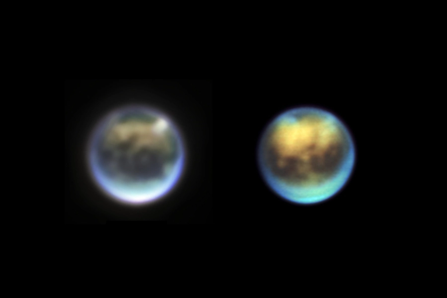

How do parts of a system intertwine?
How do parts of a system intertwine?
I'm a planetary systems scientist working on my PhD at the School of Earth and Space Exploration at Arizona State University.
I like to think about how environment affects possible chemistry, winds and dunes on Titan, glittering ice plumes at Enceladus, and how people communicate through social media.
A.A., General Education, 2019, University of Arkansas at Hope-Texarkana.
B.S., Physics, 2023, University of Central Arkansas.
B.A., Linguistics, 2023, University of Central Arkansas.
Ph.D., Geological Sciences, ~2028, Arizona State University.
NASA, ESA, CSA, Webb Titan GTO Team, Alyssa Pagan (STScI)
.container { display: grid; align-items: center; grid-template-columns: 1fr 1fr 1fr; column-gap: 5px; } img { max-width: 100%; max-height:100%; } .text { font-size: 70px; } Tweets by hypastro